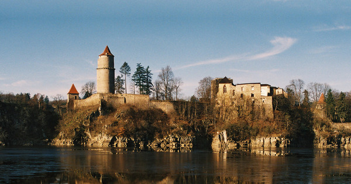

Úvod
Přitahují vás záhadná místa, kde se něco stalo nebo jsou spojena s legendou? Věříte na duchy a jiné nadpřirozené jevy? Jestli ano, neváhejte se po nich vydat. Zde naleznete deset nejzáhadnějších míst.
Býčí skála
V Býčí skále se dříve údajně konaly krvavé rituály. Ještě dnes prý jeskyňáři občas slyší záhadné hlasy, řev zvířat nebo lidské kroky. Býčí skála se nachází ve střední části Moravského Krasu, v dolní části Křtinského údolí, mezi městečky Adamov a Křtiny.
Statek Pohádka
Děsivé místo v Čechách je statek Pohádka. Svědectví skrývají trosky statku, paradoxně s poetickým názvem Pohádka. Samota se nachází nedaleko šumavské vesničky Čachrov. Pohádka je léta opuštěnou ruinou, jejíž zdi pamatují vraždy, násilí, neřest, sebevraždy. Místo je spojené se sériovým vrahem Roubalem, který je odsouzený na doživotí. Těla vrahových obětí byla hozena prasatům, která je sežrala. Místo si tak nese punc tragédie a neštěstí.
Velhartický hřbitov
Velhartický hřbitov je Šumavě a inspiroval Karla Jaromíra Erbena k sepsání balady Svatební košile, v níž hlavní hrdinku unáší na hřbitov její zemřelý milý. I dnes se na Velhartickém hřbitově dějí podivné věci. Místní na hřbitov neradi chodí, i když zde mají pohřbené své blízké. Ženy prý v kostele při mši omdlévají a cítí se tu divně.
Zámek Velké Losiny
S čarodějnickými procesy je spojený zámek Velké Losiny. Na konci 17. století se pod vedením šíleného inkvizitora Jindřicha Bobliga konaly čarodějnické procesy. Umučeny byly desítky lidí. Velké Losiny leží kousek od Šumperka.
Les Bor
Protkaný hrůzou je i tajemný les Bor, také zvaný Branišovký les, ležící u Českých Budějovic. Lidé tu slýchají zvláštní zvuky a kroky. Zvídavé turisty může dohonit temný přízrak s rudě planoucíma očima.
Hrad Zvíkov
Několik neobjasněných záhad obestírá hrad Zvíkov, ležící na soutoku Otavy a Vltavy na Orlické přehradě. Mnohým návštěvníkům se abnormálně rychle vybíjí baterie k fotoaparátům a kamerám, nebo většina z vyfotografovaných obrázků jsou černé či rozmazané. Děsivou záhadu ukrývá Korunní síň, kde se dříve uchovávaly korunovační klenoty, než pro ně Karel IV. nechal vystavět Karlštějn. V místnosti je údajně silná energie, která zlikviduje nejmodernější techniku. A filmaři, kteří tu natáčeli film, dopadli velice špatně. Při natáčení se jim na monitoru rozlévala “červená krev“ a hlavní postava filmu do roka spáchala sebevraždu, také režisér zemřel za podivných okolností.

Hrad Houska
Hrad Houska nepatří mezi nejkrásnější stavby ani není obklopený obrovským parkem, tento tajemný hrad zaujme návštěvníky především pověstí o průrvě do pekla a o odsouzenci, který byl do ní spuštěn. Při prohlídce máte pocit, že ukrývá něco tajemného, ať už je to brána do pekla nebo stroj času. Hrad Houska se nachází mezi městy Česká Lípa a Doksy.
Jihlavské katakomby
Záhady jihlavského podzemí stále trvají. Největším lákadlem jihlavského podzemí je svítící chodba. Záhadu zeleného světélkování na jejích stěnách si lidé vysvětlují různě. A to jako vstupní bránu do čtvrté dimenze. Chodbou se údajně prochází duch.
Penzion Nimrod
V lesích nedaleko Mariánských Lázní se nachází opuštěná budova s divnou minulostí. Jde o penzion Nimrod, který dnes lidem nahání strach. Během druhé světové války sloužila budova jako sanatorium pro raněné vojáky, po válce se do objektu vrátily restaurační služby. Od té doby prý místo provází podivné úkazy. Jeden z provozovatelů záhadně zmizel, ubytovaní hosté prý často vídali pohybující se světélka v okolí budovy nebo měli intenzivní pocit, že nejsou v pokoji sami. Některé děti si v penzionu často povídaly s neviditelnými bytostmi.
Bohnický hřbitov
Bohnický hřbitov, nebo také hřbitov bláznů v Praze. Mrtvoly, hroby i stromy jsou tu pokryté břečťanem. Hřbitov je veřejnosti nepřístupný, proto je zřejmě vyhledávaným místem zvědavci, kteří přelézají zeď. Lidé tu cítí neúprosnou úzkost a podivný proud energie.